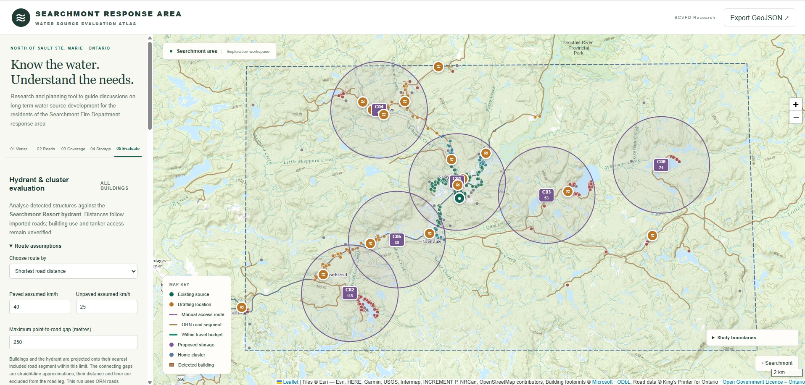
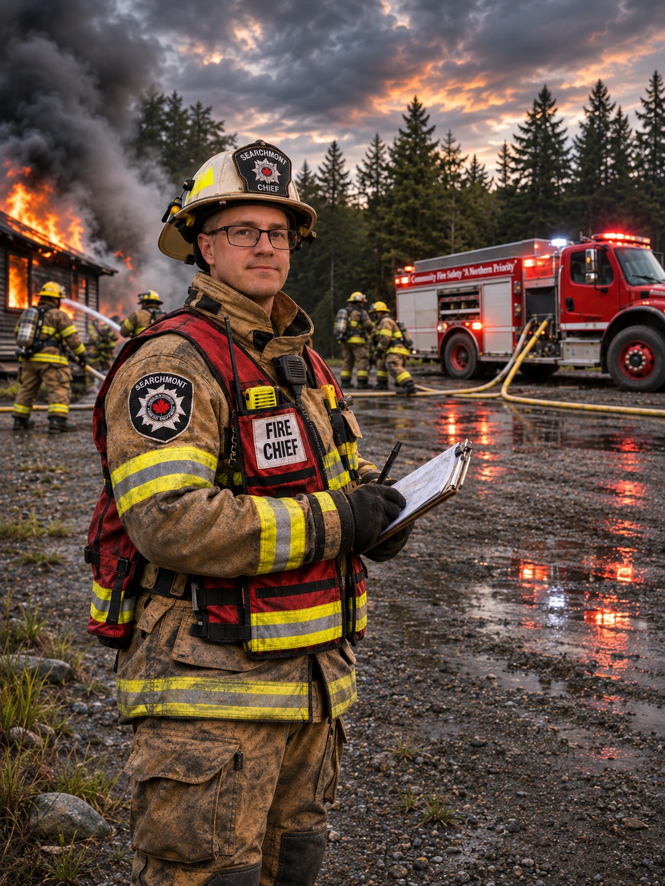
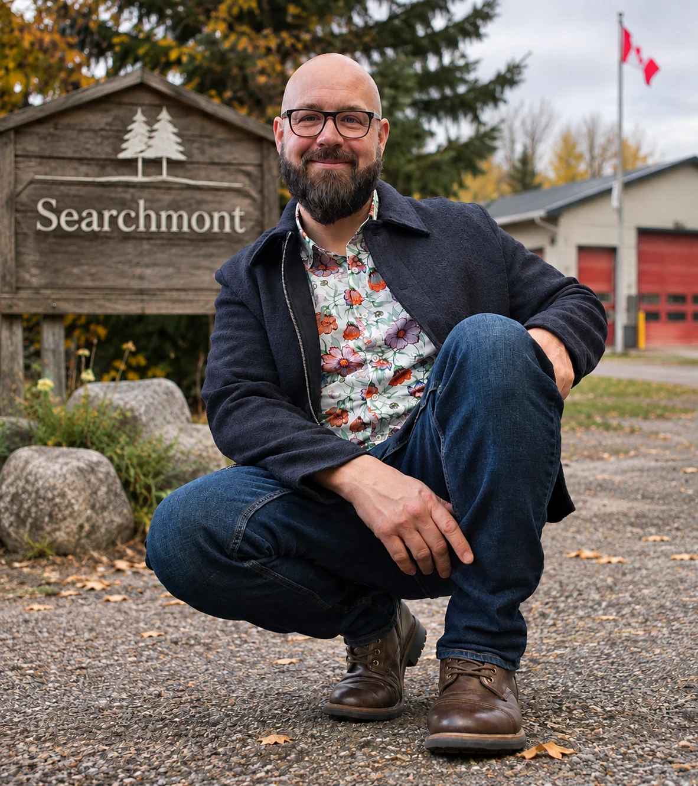

On-premises to SaaS
Led the migration of governance content and data quality rules from on-premises IBM InfoSphere to SaaS IBM watsonx.data intelligence on IBM Cloud.
Platform modernization · Automation · Monitoring · Technical leadership
Nearly 20 years at the Ontario Lottery and Gaming Corporation, on the platforms behind the business from several sides: the voice network, development, test and staging environments on Red Hat Linux, Windows and VMware, and for the past decade the data quality and metadata platforms on Cloudera and IBM watsonx. I led the move from on-premises to SaaS, kept critical services running through a platform outage, and built the automation and monitoring that catch problems early. For 11 of those years I also held incident command as Fire Chief.
This site supports my application to OLG for Infrastructure Engineering Level 3 (R26_00676) on the Infrastructure Modernization team.
02 · Role fit
Each row is an accountability or requirement from the Infrastructure Engineering Level 3 posting. Select one to see the evidence behind it.
03 · Platforms & operations
Senior Data Quality Analyst, October 2013 to October 2026. Environment Provisioning Analyst, QA Analyst and Voice Network Analyst from May 2007.
Led the migration of governance content and data quality rules from on-premises IBM InfoSphere to SaaS IBM watsonx.data intelligence on IBM Cloud.
With OLG network resources and IBM's developers, installed, configured and tested IBM's new Satellite Connector so watsonx on IBM Cloud could reach data behind the firewall without exposing it to the internet.
Retired Informatica Data Quality as OLG consolidated its warehouses into a Cloudera data lake, and resolved the integration problems between InfoSphere and the new Hadoop cluster: HDFS, Parquet and Hive.
Administered Red Hat Linux for the Siebel Customer Hub environments, Windows in the MGAM and eQube bingo gaming environments, and a VMware-based environment for casino and gaming scheduling software.
Installed and upgraded core components across multiple non-production environments through two major vendor transitions, and wrote the documentation production support used to carry releases into production.
Worked ITIL processes in ServiceNow, documented defects to cut resolution time, and pulled security, infrastructure and vendor teams together to get issues resolved.
When the primary data quality tool was unavailable, built a config-driven (YAML) Python framework on Cloudera AI. Every check is a versioned configuration entry that can be reviewed and rerun, the same idea as infrastructure as code.
Member of domain working groups developing application standards with infrastructure planning, and worked with Data Architecture on DevOps practices and data contracts.
On my own initiative, led an upgrade of the defect management platform for all testing teams, which let OLG retire a second vendor's tool and its costs.
04 · Hybrid connectivity
The move to watsonx put the platform on IBM Cloud while the data stayed on OLG's private network. Select a step to follow how the Satellite Connector bridges the two.
Simplified, generic diagram of the pattern. No OLG network addresses, hosts or configuration are shown.
05 · Monitoring lab
At OLG I built drift detection against a 30-day rolling baseline, then set up a machine learning model that learned weekend and holiday patterns where z-scores raised false alerts. The same problem shows up in any infrastructure metric with a weekly rhythm: alert fatigue on normal peaks, and real faults hidden inside them. This demo recreates it on simulated data. Switch the method and move the threshold.
Simulated data for illustration only. No OLG data is shown on this site.
A walkthrough of the full case study: where a rolling z-score breaks down on weekend and holiday patterns, and how a machine learning model that learns what a normal day looks like fixes it.
06 · Config-driven projects
Two open-data projects for the Searchmont fire response area, built in Python and JavaScript and hosted as static sites. Each keeps its rules in configuration, not code, so they can be reviewed, tuned and rerun. The figures below are real results from the 2024 run.
Scores every house against the FireSmart Home Ignition Zone using Ontario's airborne LiDAR: tree canopy and ladder fuel within 10 m and 30 m of the wall. Every threshold lives in one config file so it can be tuned with a FireSmart representative without touching code.
Validated on a synthetic tile with known truth: rank agreement between yard management and score was Spearman −0.98.
What is a home or cottage worth? A wildfire can take a home in an afternoon, and most of what protects it has to be done long before there is smoke in the air. This analysis has given the fire department a place to start that work.
Community-level summaries only. Property-level results are shared with the owner. LiDAR screens vegetation and terrain; it does not replace an on-site FireSmart assessment. Assessed values are totals from the 2018 Searchmont Local Services Board assessment roll; they include land and are not market or replacement values. Contains information licensed under the Open Government Licence – Ontario.
The response area has one hydrant and relies on tankers and drafting sites for everything else. I broke "where should new water supply go?" into five steps that can each be checked on their own.

The atlas labels what is verified and what is assumed. Proposed storage never counts as available water, and coverage estimates are for planning discussion, not certified response times.
07 · Incident leadership
My people leadership ran alongside my OLG career for three decades. Hover or tap a bar for detail.


Held incident command at fire, rescue, hazardous materials and medical incidents, coordinating with the OPP, paramedic services, the Ministry of Natural Resources, the Office of the Fire Marshal and neighbouring departments.
What went well, what to improve. Outside of legislative changes, these debriefs were the main driver of change in the department, the same loop as a good post-incident review.
Set priorities and expectations, and coached and developed members, including four captains. The key was learning what motivated each person and building on it.
Managed a ~$100,000 annual budget and ~$1M in OHSA-compliant equipment, with replacement funds planned ahead, reported at each monthly public meeting of the Local Services Board.
Planned and delivered training and drills, and helped coordinate pooled courses for 26 fire departments as Secretary of the Algoma Mutual Aid Association.
As President of the Superior Community Skatepark Association, led the team that funded Sault Ste. Marie's first concrete skatepark with the City and two levels of government.
More on the fire service work: travis-mccormack-emergency-service.com
08 · Interactive game
A playable retro-cyberpunk simulation of master data management, schema drift and triage under pressure, built using JavaScript, HTML5 Canvas, the Web Audio API and the Web Speech API in a single self-contained file with no dependencies, and hosted as a static site. #sound-on
09 · Skills & education
10 · Contact
Choose what you need and I'll reply directly. References are available on request.
Searchmont, Ontario. Able to work onsite in Toronto or Sault Ste. Marie.
Connect on LinkedIn